Home / Resources
Resources
Reference material and research tools from the Art on Stamps archive.
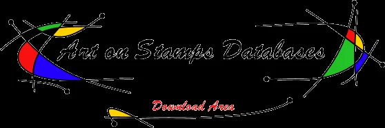
Free Philatelic Databases
Downloadable reference resources.
Classical Art Poll
Explore the original illustrated classical art poll.
Awarded Stamps
Explore the original illustrated article.
Famous Stamps
Explore the original illustrated article.
How to Scan Stamps
Explore the original illustrated article.
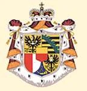
Scratch Stamps
Explore the original illustrated article.
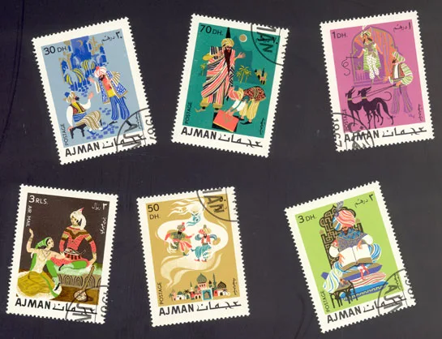
How to Automate the Crop and Straighten of Scanned Stamps Images
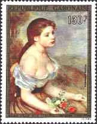
The Best Stamp
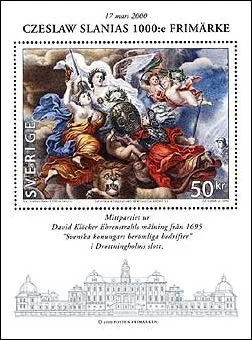
AWARDED ART ON STAMPS ISSUES
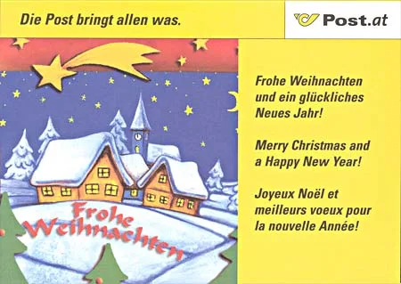
Christmas Congratulation Cards from PAs
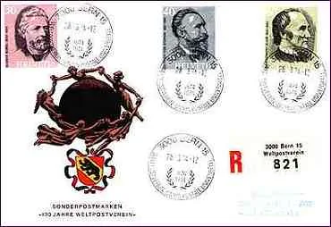
Universal Postal Union
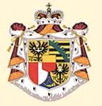
Scratch Stamps from Liechtenstein
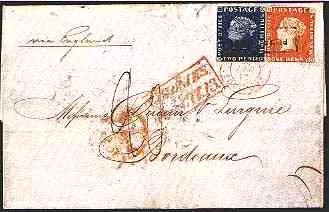
The Most Famous Classic Stamps
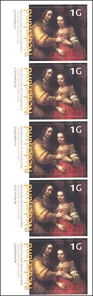
Beautiful Arts Stamps from The Netherlands
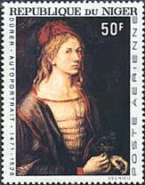
Illegal Stamps - Niger
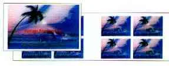
Cartolina - Swiss Post International
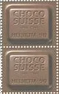
Chocolate Stamps from Switzerland

About Imperforates, Stamps and Sheets
Georgia O'Keeffe
Paintings and Arts on Stamps Internet Club - Officers
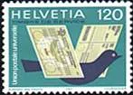
International Reply Coupons
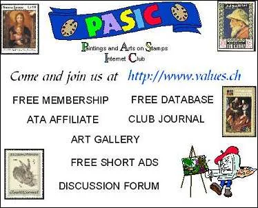
PASIC Journal
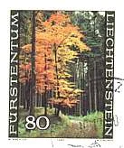
Art on Stamps site News

Some Advice for Beginning Stamp Collectors

New Stamps Issues and Their Values
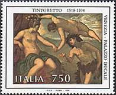
Tintoretto, The First Modern Painter?
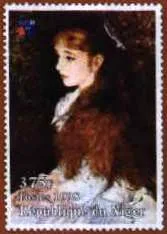
Mlle d'Anvers, by Renoir
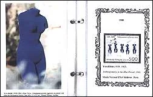
Art Trivia
Images on these cards are taken from the linked original pages. The Rembrandt catalogue is temporarily omitted.
Art on Stamps Site - 17 Years Later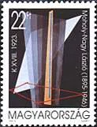
Laszlo Moholy-Nagy, a painter from Hungary Laszlo Moholy-Nagy, un artist-peintre de HongrieThe Art of Printing Stamps
Laszlo Moholy-Nagy, un artist-peintre de HongrieThe Art of Printing Stamps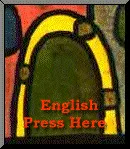
Paintings.org.uk This domain name is for sale and Arts on Stamps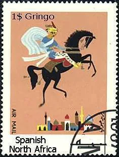
SNA- 1001 Nights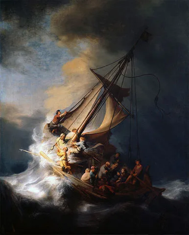
THE LARGEST SINGLE PROPERTY THEFT IN RECORDED HISTORY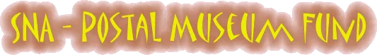
SNA - Postal Museum Sheet Arts on Stamps News - Special Edition
Arts on Stamps News - Special Edition The Goals of This Site
The Goals of This Site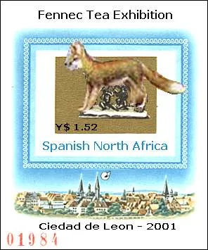
SNA - Fennec Tea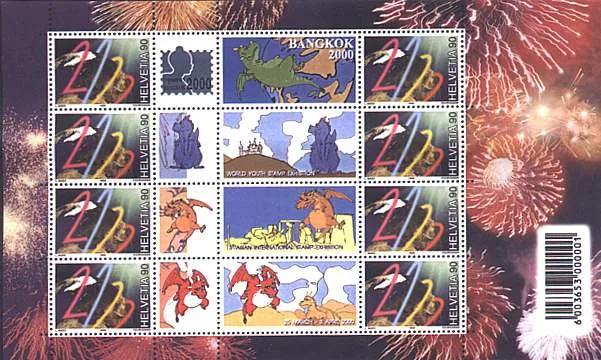
The Danger of Personalized Stamps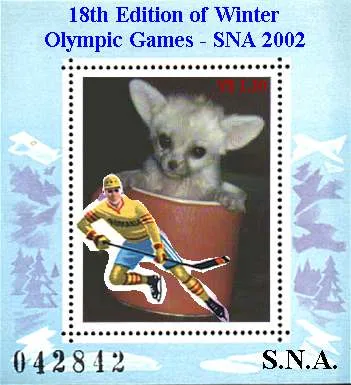
SNA -Winter Olympic Games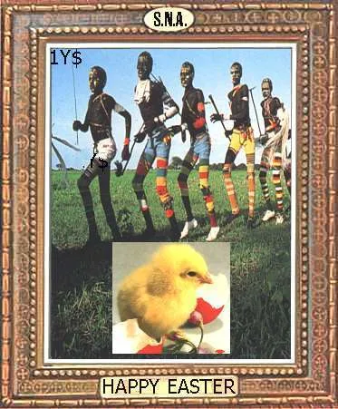
SNA Easter Issue 2001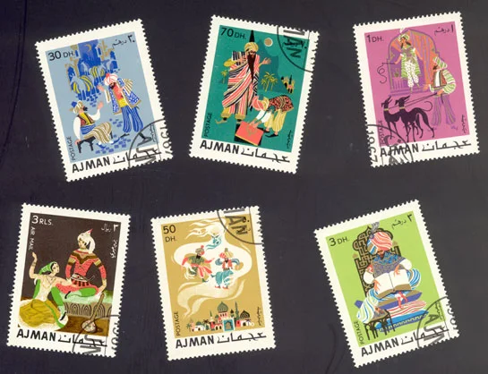
How to Scan Postage Stamps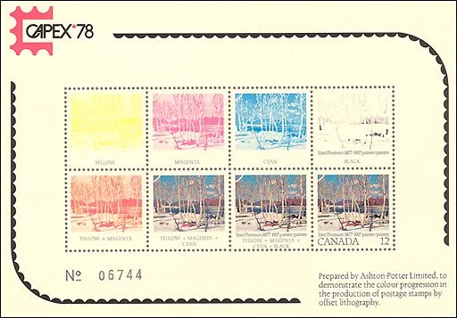
Postage Stamp PrintingIllegal Stamps of Niger and the UPUMisuse of Postal Stamps